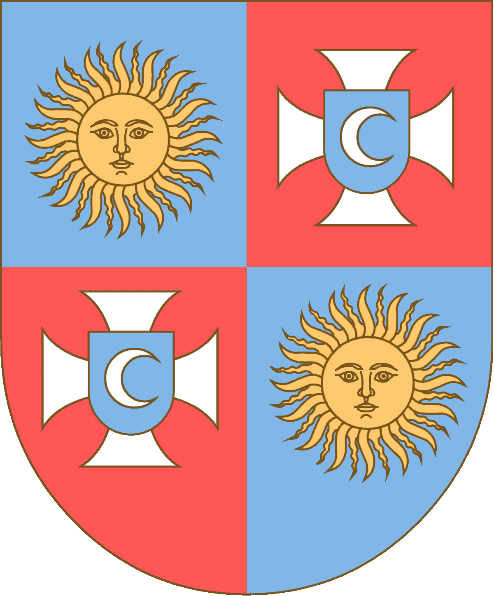

Чому важливо знати історію?
Старовинні палаци колишніх верхівок суспільства – історичне надбання, яке є доказом геніальності минулих епох завдяки своїй витривалості й візуальній естетиці, приховує у собі безліч цікавих історичних моментів. Також варто врахувати, що вивчення минулого рідного краю є кроком до осягнення суті свого народу та самого себе, тому розкриття історії пам’яток архітектури, а саме – палаців Вінниччини, потребує більшої уваги.
Історія – це велика пригода людства, яке вже відбулася і переказується щоразу по-новому, і кожен раз цікаво. Це – оцінки далеких подій і вчинків історичних особистостей, іноді придуманих, іноді дійсних, сміливих і страшних. Історія – це велике кладовище ненароджених дітей, чиї батьки загинули в нескінченних війнах за праве діло, за віру або мир у всьому світі. Історія – це величезний ком брехні і помилок інтерпретаторів, що виправдовують помилки і злочини вищими інтересами.
Мета сайту
Сайт «Палаци Вінниччини» було розроблено для користувачів, яких цікавить історична архітектурна спадщина, а саме палаци 16-20 ст., які були збудовані на Вінниччині для еліти тодішнього суспільства. Даний сайт містить інформацію про найбільш відомі палаци Вінниччини, їх розміщення, роки побудови та особливості.
Сайт було створено саме для ознайомлення користувачів із старовинними палацами Вінниччини, їх історією, яка має властивість повторюватись та торкатися кожного з нас. Не знати історію свого краю – не знати свою історію та минуле своїх пращурів. Історія, наповнена мудрістю колишніх часів, ділиться з кожним зацікавленим лицем часткою правди та пророкувань на майбутнє, адже має властивість циклічності – повторюватися в руках тих, хто її не знає.